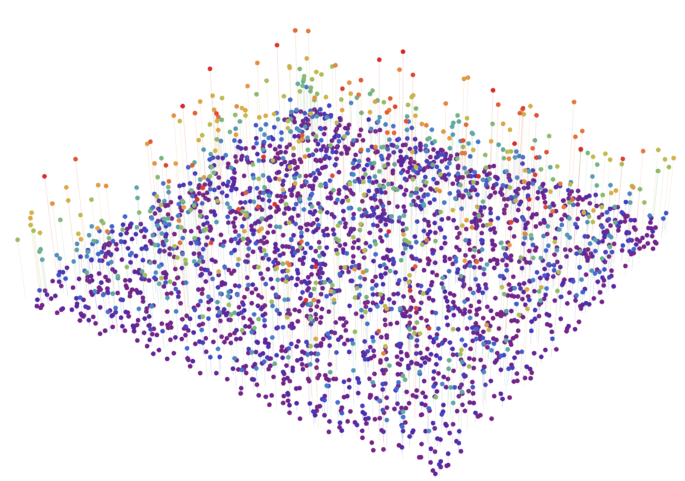
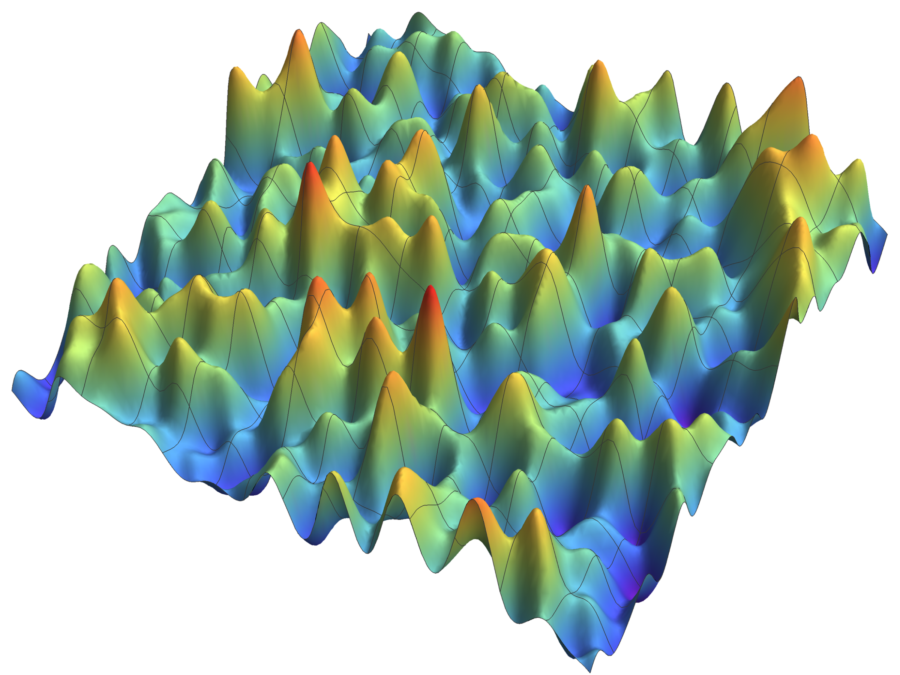
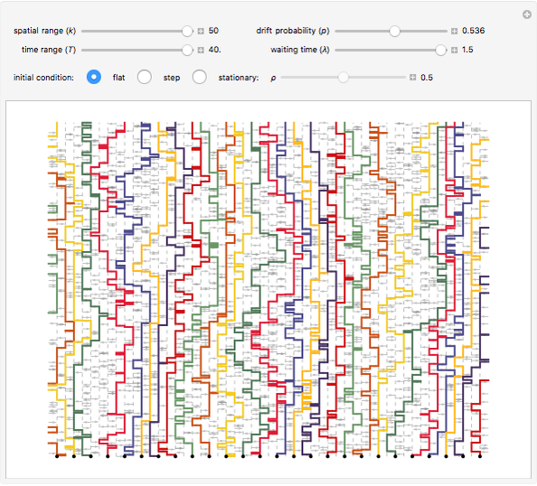
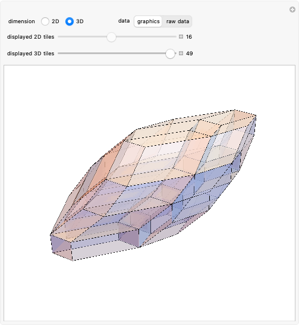

current and upcoming events
- 24/11/26
- Séminaire Calcul stochastique @ IRMA – Université de Strasbourg, Strasbourg, FR
- 1/10–04/12/26
- Research stay (CNRS Poste Rouge) @ Université de Haute-Alsace, Mulhouse, FR
some past events
- 20–23/10/26
-
Workshop: Nonlinear Markov Processes, Dirichlet Forms, and PDEs, Bernoulli Center, EPFL, Lausanne, CH
Organizer with Mathias Braun, Giovanni Brigati, and Marco Rehmeier
- 13-17/9/26
- Open Japanese-German Conference on Stochastic Analysis and Applications, Bielefeld University, Bielefeld, DE
- 24–28/08/26
- Research stay @ Universität Wien, Vienna, AT
- 18-22/07/26
- Research stay @ University of Bath, Bath, UK
- 13-17/7/26
- Durham Symposium on Metric Geometry, Analysis and Probability, Durham University, Durham, UK
- 8-12/07/26
- Research stay @ University of Bath, Bath, UK
- 8–12/6/26
-
Fifth Italian Meeting on Probability and Mathematical Statistics, Università degli Studi di Palermo, Palermo, IT
Organizer with Alexander Zass of the parallel session Scaling limits, criticality, and random media in statistical physics
- 22-27/03/26
- Workshop Flows on Measure Spaces and Applications in Machine Learning, MFO, Oberwolfach, DE
- 16-18/02/26
- 3rd Berlin - Leipzig Workshop on Fluctuating Hydrodynamics, MPI für Mathematik in den Naturwissenschaften, Leipzig, DE
- 30/11-4/12/25
- Workshop Functional Inequalities: Geometric Calculus meets Stochastic Analysis, MFO, Oberwolfach, DE
- 24/11-28/11/25
- Research stay @ Université du Luxembourg, Belval, LU
- 23-26/09/25
- Workshop Young Researchers in Stochastic Analysis and Stochastic Geometric Analysis, EPFL, Lausanne, CH
- 07-08/07/25
- Mini-Workshop Optimal Transport for Complex Data, University of Vienna, Vienna, AT
- 23-27/06/25
- Research in Pairs with Andrea Pinamonti, CIRM, Trento, IT
- 16–20/06/25
- Conference PRIN Geometry of RAndom FIelds and Applications (GRAFIA), Cortona, IT
- 7–9/04/25
-
Workshop Stochastic equations and particle systems @ INdAM, Rome, IT
Organizer with Lorenzo Bertini Malgarini, Giacomo Di Gesù, and Gianni Jona-Lasinio
- 29–31/01/25
- Research stay @ Technische Universität Berlin, Berlin, DE
- 29–30/01/25
- Critical behaviour in spatial particle systems, Weierstraß Institut für Angewandte Analysis und Stochastik (WIAS), Berlin, DE
- 10–14/01/25
- Research stay @ Technische Universität München, Munich, DE
- 16–17/12/24
- Research stay @ Università Statale di Milano, Milano, IT
- 19–22/11/24
- Probability Event: Point Processes, Exchange & Research, University of Münster, Münster, DE
- 11-15/11/24
- Research stay @ Università di Trieste, Trieste, IT
- 28–31/10/24
- SPP 2265 Random Geometric Systems Third Annual Conference, Harnack-Haus, Berlin, DE
- 22/09-1/10/24
- School and Conference on Metric Measure Spaces, Ricci Curvature, and Optimal Transport, Varenna, IT
- 18–20/09/24
- Large scale behaviour of interacting diffusions, Padova, IT
- 12–16/08/24
- 2024 World Congress in Probability and Statistics, Bochum, DE
- 29/7-2/08/24
-
Research stay @ IAM Bonn, Bonn, DE
- 01–04/7/24
-
Research stay @ IAM Bonn, Bonn, DE
- 24–28/6/24
-
Research stay @ Universität Hamburg, Hamburg, DE
- 10–14/06/24
- Fourth Italian Meeting on Probability and Mathematical Statistics, Roma, IT
- 21–24/05/24
-
Workshop Synthetic Curvature Bounds for Non-Smooth Spaces: Beyond Finite Dimension @ ESI, Vienna, AT
Organizer with Christian Ketterer and Chiara Rigoni
- 29/1–9/2/24
- Research stay @ Università degli Studi di Roma "Tor Vergata", Roma, IT
- 18–22/12/23
- Mean field interactions with singular kernels and their approximations @ IHP, Paris, FR
- 27–30/11/23
- Research stay @ Università di Trento, Trento, IT
- 20–24/11/23
- Research stay @ Universität Münster, Münster, DE
- 6–10/11/23
- Stochastic Analysis @ RIMS, Kyōto, JP
- 30/10–2/11/23
- Research stay @ Keiō University and Waseda University, Yokohama and Tōkyō, JP
- 23–26/10/23
- SALSIS (21st Symposium Stochastic Analysis on Large Scale Interacting Systems) @ RIMS, Kyōto, JP
- 10–13/10/23
- Research stay @ Bielefeld University, Bielefeld, DE
- 21–22/9/23
- Research stay @ Bielefeld University, Bielefeld, DE
- 4–9/9/23
- XXII Congress of the Italian Mathematical Union, Pisa, IT
- 24–28/7/23
- 43rd Conference on Stochastic Processes and their Applications, University of Lisbon, Lisbon, PT
- 17–21/7/23
-
SPP2265 Summer School: Probability and Geometry on Configuration Spaces, Harnack-Haus, Berlin, DE
Organizer with Alexander Zass
- 19–22/6/23
-
Maas Group Retreat, Nußdorf am Attersee, AT
- 12–16/6/23
-
Calculus of Variations & Geometric Measure Theory, Pisa, IT
- 22–26/5/23
-
Research stay @ Swansea University, Swansea, UK
- 27–30/3/23
- SPP 2265 Random Geometric Systems Second Annual Conference, DLR, Cologne, DE
- 20–24/3/23
-
Research stay @ IAM Bonn, Bonn, DE
- 20/2/23
- SMAQ Seminar, Gran Sasso Science Institute, L'Aquila, IT
- 9–12/1/23
-
Research stay @ Sapienza — Università di Roma, Rome, IT
- 27/11–3/12/22
-
Mini-Workshop: A Geometric Fairytale full of Spectral Gaps and Random Fruit @ MFO, Oberwolfach, DE
- 30/10–5/11/22
-
Workshop: Heat Kernels, Stochastic Processes and Functional Inequalities @ MFO, Oberwolfach, DE
- 24–28/10/22
-
Optimal Transportation and Applications @ CRM E. De Giorgi, Pisa, IT
- 7–9/9/22
-
Austrian Stochastic Days 2022 @ Uni Wien, Vienna, AT
- 29/8–3/9/22
-
New Trends in Dirichlet Forms and Optimal Transport & From Dirichlet Forms to Wasserstein Geometry @ HCM, Bonn, DE
- 31/7–6/8/22
-
JTP Stochastic modelling in the life science: From evolution to medicine @ HCM, Bonn, DE
- 24–30/7/22
-
Research stay @ Swansea University, Swansea, UK
- 13–16/6/22
-
Third Italian Meeting on Probability and Mathematical Statistics, Alma Mater Studiorum — University of Bologna, Bologna, IT
Organizer with Federico Sau of the parallel session Scaling limits, criticality, and random media in statistical physics
- 17–22/4/22
- Research stay @ IAM Bonn, Bonn, DE
- 11–14/4/22
- SPP 2265 Random Geometric Systems First Annual Conference, Harnack-Haus, Berlin, DE
- 21/11-18/12/20
- Research in Pairs with Kohei Suzuki, MFO, Oberwolfach, DE
- 28–29/1/20
- Inhomogeneous Random Systems, Institut Curie, Paris, FR
- 17–23/11/19
- MFO workshop Heat Kernels, Stochastic Processes and Functional Inequalities, MFO, Oberwolfach, DE
- 2–6/9/19
- 9th Japanese-German Open Conference on Stochastic Analysis, Fukuoka, JP
- 7–12/7/19
- 5th school on Stochastic and Geometric Analysis, Piz Buin, AT
- 11–13/3/19
- Retreat 2019 of the Collaborative Research Center 1060, Weilburg, DE
- 12–16/11/18
- 9th conference on Optimal Transportation and Applications, SNS, Pisa, IT
- 12–14/3/18
- Retreat 2018 of the Collaborative Research Center 1060, Bad Neuenahr-Ahrweiler, DE
- 4–29/9/17
- Metric Measure Spaces and Ricci Curvature – Intense Activity Period, MPIM, Bonn, DE
- 7–11/11/16
- 8th conference on Optimal Transportation and Applications, SNS, Pisa, IT
- 10–14/10/16
- Stochastic Partial Differential Equations and Related Fields, in honor of Michael Röckner, Bielefeld U, Bielefeld, DE
- 29/8–2/9/16
- Follow-up Workshop to JTP Optimal Transportation, HIM, Bonn, DE
- 4–8/4/16
- 4th school on Stochastic and Geometric Analysis, Vlieland, NE
- 21–23/10/15
- Panorama of Mathematics, HCM, Bonn, DE
standing events
- 9/20–11/24
- @ ISTA & Uni Wien & TU Wien, Vienna, AT
Vienna Probability Seminar • (Not so) Informal Probability Seminar • MathPhys Analysis Seminar - 10/15–8/20
- @ IAM Bonn, Bonn, DE
Probability seminar • Stochastic and geometric analysis seminar • CRC 1060 seminar • Hausdorff Kolloquium - 10/13–7/15
- @ Sapienza — Università di Roma, Rome, IT
Analysis seminar
Tor Vergata (lecturer)
Tutte le informazioni per gli studenti sono disponibili sui canali MS Teams dei corsi e attraverso gli strumenti informatici di ateneo (Delphi).
All student information is available on the MS Teams channel of each class and through the University's e-tools (Delphi).
Information about graduate courses can be found on the Rome PhD in Mathematics website.
- 04–06/26
-
Misura, errore e statistica
lecture course for Biological Sciences (BSc), joint with Prof. Stefano Vigogna
- 03–06/26
-
EP1: Calcolo stocastico
lecture course for Mathematics (MSc)
- 01–02/26
-
Analytic methods for Markov processes: Dirichlet forms
graduate lecture course (PhD), joint with Sapienza — Università di Roma and Università degli Studi Roma Tre
- 04–05/25
-
Probabilità e statistica
lecture course for Mathematics (BSc), main lecturer Prof. Lucia Caramellino
- 03–05/25
-
Misura, errore e statistica
H03-8066724, lecture course for Biological Sciences (BSc)
ISTA (lecturer)
- 02–04/24
-
Optimal Transportation
C_MAT-505_S24, graduate lecture course
- 04–06/22
-
Fractional Gaussian Fields
C_MAT-542_S22, graduate lecture course
joint with Federico Sau - 11/20–01/21
-
Maths for quantitative life scientists: Probability and Statistical Inference
C_MAT-209_F20, graduate lecture course
IAM Bonn (teaching assistant)
- 04–07/20
-
Mathematik III für Physiker*innen
math241 SoSe 2020 61112, undergraduate lecture course
lecturer: Dr. André Schlichting - 04–07/19
-
Algorithmische Mathematik II
V1G6 SoSe 2019 611100106, undergraduate lecture course
lecturer: Prof. Dr. Patrik Ferrari - 10–12/18
-
Advanced Topics in Stochastic Analysis – Functional inequalities and stochastic analysis on manifolds
V5F3 WiSe 2018/19 611500708, graduate lecture course
lecturer: Prof. Kazumasa Kuwada, PhD - 04–09/18
-
Stochastic Analysis
V4F1 SoSe 2018 611500701, graduate lecture course
lecturer: Prof. Kazumasa Kuwada, PhD - 10/16-3/17
-
Introduction to Stochastic Analysis
V3F2/F4F1 WiSe 2016/17 611100704, graduate lecture course
lecturer: Dr. Matthias Erbar
Welcome to my website! I am a mathematician working at the interface between analysis, probability, and geometry, and a tenure-track Assistant Professor at the Università degli Studi di Roma "Tor Vergata".
Until October 2024, I was a postdoctoral researcher at the Institute of Science and Technology Austria (ISTA) in the group of Jan Maas, and the principal investigator of the project Configuration Spaces over non-smooth Spaces funded by the Austrian Science Fund (FWF) under the Early-Stage-Programme: Research–Innovation–Training (ESPRIT).
Previously, I obtained my doctoral degree at IAM Bonn, in the group of Karl-Theodor Sturm. I completed my bachelor and master studies in mathematics at Sapienza University in Rome, under the supervision of Adriano Pisante.
At ISTA I have been a member of the Sfb 65 Taming Complexity in Partial Differential Systems and at IAM of the Sfb 1060 The Mathematics of Emergent Effects in project B03 Optimal transport and random measures. I am currently an adjunct member of the DFG Priority Programme SPP 2265 in project 15 Random Riemannian Geometry.
My CV can be downloaded here.
Disambiguation
- my first name: Lorenzo,
- my surname: Dello Schiavo (two words, one surname),
- no other version of my name is correct;
- due to arXiv's incorrect indexing of author names, bibTeX records for all of my works on the arXiv are not correct (and there is no way for me to fix them). If you would like to cite my work (thank you!), please replace the author field by
author={Dello Schiavo, Lorenzo and ...}
(do not forget my coauthors ;)
- correct BibTeX entries for all my papers are in the list of publications (open a paper, then click BibTeX).
preprints
-
@misc{DelloSchiavoQuattrocchi2023Polychromatic, author = {Dello Schiavo, Lorenzo and Quattrocchi, Filippo}, title = {Polychromatic Partitions, {K}ingman Theory, and {E}wens Sampling Formula}, year = {2023}, note = {Preprint, arXiv:2309.11292}, eprint = {2309.11292}, archivePrefix = {arXiv} }A polychromatic partition is a partition of a set of colored (marked) elements in which each block is recorded only by the number of elements of each color in that block. We introduce a notion of polychromatic partition structure, i.e. a family of random polychromatic partitions consistent under deletion of elements uniformly at random, simultaneously extending (standard) partition structures, multipartition structures, and partition structures of partially exchangeable type. As an example thereof, we define a polychromatic analogue of the celebrated Ewens Sampling Formula, proving polychromatic versions of Kingman's characterization and of Hoppe's urn model. As our main result, we give a complete characterization of polychromatic partition structures, proving a triple affine homeomorphism of Bauer simplices among: polychromatic partition structures, harmonic densities for the polychromatic Hoppe urn, and probability measures on a polychromatic Kingman simplex. Additionally, we prove that this new simplex is homeomorphic to the Martin boundary of the polychromatic Hoppe urn inside its Martin compactification. We discuss various applications including closed non-recursive non-iterative expressions for multivariate moments of several random measures in terms of cycle index polynomials whose monomials are indexed by polychromatic partitions.
-
@misc{DelloSchiavoPinamonti2026Global, author = {Dello Schiavo, Lorenzo and Pinamonti, Andrea}, title = {A `global' Perspective on the Differential Geometry of {W}asserstein Spaces}, year = {2026}, note = {Preprint, arXiv:2607.27121}, eprint = {2607.27121}, archivePrefix = {arXiv} }We develop a global differential calculus on the $L^2$-Wasserstein space over a closed Riemannian manifold, based on derivations of cylinder functions rather than on the standard pointwise approach. Within this framework we define some fundamental geometric tools. In particular, we show that the Levi-Civita connection on the base manifold lifts to the unique torsion-free connection compatible with the 'extended' Otto metric. The corresponding Riemann tensor is exactly the lift of the base Riemann tensor, which shows that — in this framework — the correction terms of the classical gradient formalism are not intrinsic curvature terms, but arise from the projection onto the measure-dependent gradient distribution. This allows us to revisit with a global and purely differential approach the smooth computations by J. Lott, Comm. Math. Phys., 277(2):423-437, 2007, reaching partially different conclusions.
-
@misc{BrigatiDelloSchiavo2025Nonbilinear, author = {Brigati, Giovanni and Dello Schiavo, Lorenzo}, title = {Non-bilinear {D}irichlet Functionals: {M}arkovianity, locality, invariance}, year = {2025}, note = {Preprint, arXiv:2510.02942}, eprint = {2510.02942}, archivePrefix = {arXiv} }We present in a unified setting the foundations for a theory of non-bilinear Dirichlet functionals on Hilbert spaces. We prove known and new equivalences between non-linear semigroups, non-linear resolvents, non-linear generators, and their energy functionals, including a complete characterization of Markovianity. We introduce and characterize strong notions of invariance for general lower semicontinuous convex functionals, and notions of locality and strong locality for non-bilinear Dirichlet functionals. Contrary to many partial results in the literature, these characterizations are complete and correctly extend the analogous assertions for the bilinear case in full generality.
-
@misc{DelloSchiavoSodini2025HellingerKantorovich, author = {Dello Schiavo, Lorenzo and Sodini, Giacomo Enrico}, title = {The {H}ellinger--{K}antorovich metric measure geometry on spaces of measures}, year = {2025}, note = {Preprint, arXiv:2503.07802}, eprint = {2503.07802}, archivePrefix = {arXiv} }Let $(M,g)$ be a Riemannian manifold with Riemannian distance $\mathsf{d}_g$, and $\mathcal{M}(M)$ be the space of all non-negative Borel measures on $M$, endowed with the Hellinger-Kantorovich distance $\mathsf{H\! K}_{\mathsf{d}_g}$ induced by $\mathsf{d}_g$. Firstly, we prove that $(\mathcal{M}(M),\mathsf{H\! K}_{\mathsf{d}_g})$ is a universally infinitesimally Hilbertian metric space, and that a natural class of cylinder functions is dense in energy in the Sobolev space of every finite Borel measure on $\mathcal{M}(M)$. Secondly, we endow $\mathcal{M}(M)$ with its canonical reference measure, namely A.M. Vershik's multiplicative infinite-dimensional Lebesgue measure $\mathcal{L}_\theta$, $\theta>0$, and we consider: (a) the geometric structure on $\mathcal{M}(M)$ induced by the natural action on $\mathcal{M}(M)$ of the semi-direct product of diffeomorphisms and densities on $M$, under which $\mathcal{L}_\theta$ is the unique invariant measure; and (b) the metric measure structure of $(\mathcal{M}(M),\mathsf{H\! K}_{\mathsf{d}_g},\mathcal{L}_{\theta})$, inherited from that of $(M,\mathsf{d}_g,\mathrm{vol}_g)$. We identify the canonical Dirichlet form $(\mathcal{E},\mathscr{D}(\mathcal{E}))$ of (a) with the Cheeger energy of (b), thus proving that these two structures coincide. We further prove that $(\mathcal{E},\mathscr{D}(\mathcal{E}))$ is a conservative quasi-regular strongly local Dirichlet form on $\mathcal{M}(M)$, recurrent if and only if $\theta\in (0,1]$, and properly associated with the Brownian motion of the Hellinger-Kantorovich geometry on $\mathcal{M}(M)$.
-
@misc{DelloSchiavo2024Massive, author = {Dello Schiavo, Lorenzo}, title = {Massive Particle Systems, {W}asserstein {B}rownian Motions, and the {D}ean--{K}awasaki Equation}, year = {2024}, note = {Preprint, arXiv:2411.14936}, eprint = {2411.14936}, archivePrefix = {arXiv} }We develop a unifying theory for four different objects:
- infinite systems of interacting massive particles;
- solutions to the Dean—Kawasaki equation with singular drift and space-time white noise;
- Wasserstein diffusions with a.s. purely atomic reversible random measures;
- metric measure Brownian motions induced by Cheeger energies on $L^2$-Wasserstein spaces.
For the objects in (1)-(3) we prove existence and uniqueness of solutions, and several characterizations, on an arbitrary locally compact Polish ambient space $M$ with exponentially recurrent Feller driving noise. In the case of the Dean—Kawasaki equation, this amounts to replacing the Laplace operator with some arbitrary diffusive Markov generator $\mathsf{L}$ with ultracontractive semigroup. In addition to a complete discussion of the free case, we consider singular interactions, including, e.g., mean-field repulsive isotropic pairwise interactions of Riesz and logarithmic type under the assumption of local integrability. We further show that each Markov diffusion generator $\mathsf{L}$ on $M$ induces in a natural way a geometry on the space of probability measures over $M$. When $M$ is a manifold and $\mathsf{L}$ is a drifted Laplace-Beltrami operator, this geometry coincides with the geometry of $L^2$-optimal transportation. The corresponding 'geometric Brownian motion' coincides with the 'metric measure Brownian motion' in (4).
-
@misc{DelloSchiavoSuzuki2022Configuration, author = {Dello Schiavo, Lorenzo and Suzuki, Kohei}, title = {Configuration spaces over singular spaces --- {II}. {C}urvature}, year = {2022}, note = {Preprint, arXiv:2205.01379}, eprint = {2205.01379}, archivePrefix = {arXiv} }This is the second paper of a series on configuration spaces $\Upsilon$ over singular spaces $X$. Here, we focus on geometric aspects of the extended metric measure space $(\Upsilon, \mathsf{d}_{\Upsilon}, \mu)$ equipped with the $L^2$-transportation distance $\mathsf{d}_{\Upsilon}$, and a mixed Poisson measure $\mu$. Firstly, we establish the essential self-adjointness and the $L^p$-uniqueness for the Laplacian on $\Upsilon$ lifted from $X$. Secondly, we prove the equivalence of Bakry–Émery curvature bounds on $X$ and on $\Upsilon$, without any metric assumption on $X$. We further prove the Evolution Variation Inequality on $\Upsilon$, and introduce the notion of synthetic Ricci-curvature lower bounds for the extended metric measure space $\Upsilon$. As an application, we prove the Sobolev-to-Lipschitz property on $\Upsilon$ over singular spaces $X$, originally conjectured in the case when $X$ is a manifold by M. Röckner and A. Schied. As a further application, we prove the $L^\infty$-to-$\mathsf{d}_{\Upsilon}$-Lipschitz regularization of the heat semigroup on $\Upsilon$ and give a new characterization of the ergodicity of the corresponding particle systems in terms of optimal transport.
-
@misc{DelloSchiavoSuzuki2021Configuration, author = {Dello Schiavo, Lorenzo and Suzuki, Kohei}, title = {Configuration spaces over singular spaces --- {I}. {D}irichlet-Form and Metric Measure Geometry}, year = {2021}, note = {Preprint, arXiv:2109.03192}, eprint = {2109.03192}, archivePrefix = {arXiv} }This paper is the first in a series on configuration spaces over singular spaces. Here, we construct a canonical differential structure on the configuration space $\Upsilon$ over a singular base space $X$ and with a general invariant measure $\mu$ on $\Upsilon$.
We first present an analytic structure on $\Upsilon$, constructing a strongly local Dirichlet form $\mathcal E$ on $L^2(\Upsilon, \mu)$ for $\mu$ in a large class of probability measures. We then investigate the geometric structure of the extended metric measure space $\Upsilon$ endowed with the $L^2$-transportation extended distance $\mathsf{d}_\Upsilon$ and with the measure $\mu$. By establishing various Rademacher- and Sobolev-to-Lipschitz-type properties for $\mathcal E$, we finally provide a complete identification of the analytic and the geometric structure — the canonical differential structure induced on $\Upsilon$ by $X$ and $\mu$ — showing that $\mathcal E$ coincides with the Cheeger energy of $(\Upsilon,\mathsf{d}_\Upsilon,\mu)$ and that the intrinsic distance of $\mathcal E$ coincides with $\mathsf{d}_\Upsilon$.
The class of base spaces to which our results apply includes sub-Riemannian manifolds, $\mathsf{RCD}$ spaces, locally doubling metric measure spaces satisfying a local Poincaré inequality, and path/loop spaces over Riemannian manifolds; as for $\mu$, our results include Campbell measures and quasi-Gibbs measures, in particular: Poisson measures, canonical Gibbs measures, as well as some determinantal/permanental point processes (sine$_\beta$, Airy$_\beta$, Bessel$_{\alpha, \beta}$, Ginibre).
A number of applications to interacting particle systems and infinite-dimensional metric measure geometry are also discussed. In particular, we prove the quasi-regularity of $\mathcal E$ and consequently the existence of a Markov diffusion associated to $\mathcal E$ describing a $\mu$-invariant particle system. We further show the universality of the $L^2$-transportation distance $\mathsf{d}_\Upsilon$ for the Varadhan short-time asymptotics for diffusions on $\Upsilon$, regardless of the choice of $\mu$. Our approach does not rely on any relation between $\mu$ and a possible smooth structure on $X$. In particular, we assume no quasi-invariance property of $\mu$ w.r.t. actions of any group of transformations of $X$. Many of our results are new even in the case of standard Euclidean spaces.
publications
-
journal | |
@article{DelloSchiavoMagnaboscoRigoni2026Gradient, author = {Dello Schiavo, Lorenzo and Magnabosco, Mattia and Rigoni, Chiara}, title = {Gradient flows of $(K,N)$-convex functions with negative $N$}, journal = {Calculus of Variations and Partial Differential Equations}, volume = {65}, pages = {Paper No. 90}, year = {2026}, doi = {10.1007/s00526-025-03187-z}, eprint = {2412.04574}, archivePrefix = {arXiv} }We discuss $(K,N)$-convexity and gradient flows for $(K,N)$-convex functionals on metric spaces, in the case of real $K$ and negative $N$. In this generality, it is necessary to consider functionals unbounded from below and/or above, possibly attaining as values both the positive and the negative infinity. We prove several properties of gradient flows of $(K,N)$-convex functionals characterized by Evolution Variational Inequalities, including contractivity, regularity, and uniqueness.
-
journal | |
@article{DelloSchiavoSuzuki2025Persistence, author = {Dello Schiavo, Lorenzo and Suzuki, Kohei}, title = {Persistence of {R}ademacher-type and {S}obolev-to-{L}ipschitz properties}, journal = {Advances in Mathematics}, volume = {481}, pages = {Paper No. 110542}, year = {2025}, doi = {10.1016/j.aim.2025.110542}, eprint = {2309.10733}, archivePrefix = {arXiv} }We consider the Rademacher- and Sobolev-to-Lipschitz-type properties for arbitrary quasi-regular strongly local Dirichlet spaces. We discuss the persistence of these properties under localization, globalization, transfer to weighted spaces, tensorization, and direct integration. As byproducts we obtain: necessary and sufficient conditions to identify a quasi-regular strongly local Dirichlet form on an extended metric topological $\sigma$-finite possibly non-Radon measure space with the Cheeger energy of the space; the tensorization of intrinsic distances; the tensorization of the Varadhan short-time asymptotics.
-
journal | |
@article{DelloSchiavoKonarovskyi2025Illposedness, author = {Dello Schiavo, Lorenzo and Konarovskyi, Vitalii}, title = {Ill-posedness of the pure-noise {D}ean--{K}awasaki equation}, journal = {Electronic Communications in Probability}, volume = {30}, pages = {Paper No. 52, 9 pp.}, year = {2025}, doi = {10.1214/25-ECP702}, eprint = {2501.09677}, archivePrefix = {arXiv} }We prove that the Dean—Kawasaki-type stochastic partial differential equation $$ \partial \rho= \nabla\cdot (\sqrt{\rho\,}\, \xi) + \nabla\cdot \big(\rho\, H(\rho)\big) , $$ with vector-valued space-time white noise $\xi$, does not admit solutions for any initial measure and any vector-valued bounded measurable function $H$ on the space of measures. This applies in particular to the pure-noise Dean—Kawasaki equation ($H \equiv 0$). The result is sharp, in the sense that solutions are known to exist for some unbounded $H$.
-
journal | |
@article{DelloSchiavoHerryKopferSturm2025Polyharmonic, author = {Dello Schiavo, Lorenzo and Herry, Ronan and Kopfer, Eva and Sturm, Karl-Theodor}, title = {Polyharmonic Fields and {L}iouville Quantum Gravity Measures on Tori of Arbitrary Dimension: from Discrete to Continuous}, journal = {Mathematische Nachrichten}, volume = {298}, number = {1}, pages = {244--281}, year = {2025}, doi = {10.1002/mana.202400169}, eprint = {2302.02963}, archivePrefix = {arXiv} }For an arbitrary dimension $n$, we study: (a) the Polyharmonic Gaussian Field $h_L$ on the discrete torus $\mathbb{T}^n_L = \frac{1}{L} \mathbb{Z}^{n} / \mathbb{Z}^{n}$, that is the random field whose law on $\mathbb{R}^{\mathbb{T}^{n}_{L}}$ is given by \begin{equation*} c_n\, e^{-b_n\|(-\Delta_L)^{n/4}h\|^2} dh, \end{equation*} where $dh$ is the Lebesgue measure and $\Delta_{L}$ is the discrete Laplacian; (b) the associated discrete Liouville Quantum Gravity measure associated with it, that is the random measure on $\mathbb{T}^{n}_{L}$ \begin{equation*} \mu_{L}(dz) = \exp \Big( \gamma h_L(z) - \frac{\gamma^{2}}{2} \mathbf{E} h_{L}(z) \Big) dz, \end{equation*} where $\gamma$ is a regularity parameter. As $L\to\infty$, we prove convergence of the fields $h_L$ to the Polyharmonic Gaussian Field $h$ on the continuous torus $\mathbb{T}^n = \mathbb{R}^{n} / \mathbb{Z}^{n}$, as well as convergence of the random measures $\mu_L$ to the LQG measure $\mu$ on $\mathbb{T}^n$, for all $|\gamma| < \sqrt{2n}$.
-
journal | |
@article{DelloSchiavoHerryKopferSturm2024Conformally, author = {Dello Schiavo, Lorenzo and Herry, Ronan and Kopfer, Eva and Sturm, Karl-Theodor}, title = {Conformally Invariant Random Fields, Quantum {L}iouville Measures, and Random {P}aneitz Operators on {R}iemannian Manifolds of Even Dimension}, journal = {Journal of the London Mathematical Society}, volume = {110}, number = {5}, pages = {Paper No. e70003, 80 pp.}, year = {2024}, doi = {10.1112/jlms.70003}, eprint = {2105.13925}, archivePrefix = {arXiv} }For large classes of even-dimensional Riemannian manifolds $(M,g)$, we construct and analyze conformally invariant random fields. These centered Gaussian fields $h=h_g$, called co-polyharmonic Gaussian fields, are characterized by their covariance kernels $k$ which exhibit a precise logarithmic divergence: $\big| k(x,y)-\log\frac{1}{d(x,y)} \big| \leq C$. They share the fundamental quasi-invariance property under conformal transformations: if $g'=e^{2\varphi}g$, then $$ h_{g'}\overset{\mathrm{d}}= e^{n\varphi} h_g-C\cdot \mathrm{vol}_{g'} $$ with an appropriate random variable $C=C_\varphi$. In terms of the co-polyharmonic Gaussian field $h$, we define the quantum Liouville measure, a random measure on $M$, heuristically given as $$ \mathrm{d}\mu_g^h(x):= e^{\gamma h(x)-\frac{\gamma^2}2k(x,x)}\,\mathrm{dvol}_g(x)\,, $$ and rigorously obtained as almost sure weak limit of the right-hand side with $h$ replaced by suitable regular approximations $h_\ell, \ell\in\mathbb N$. These measures share a crucial quasi-invariance property under conformal transformations: if $g'=e^{2\varphi}g$, then $$ \mathrm{d}\mu^{h'}_{g'}(x)\overset{\mathrm{d}}= e^{F^h(x)}\,\mathrm{d}\mu_g^h(x) $$ for an explicitly given random variable $F^h(x)$. In terms of the quantum Liouville measure, we define the Liouville Brownian motion on $M$ and the random GJMS operators. Finally, we present an approach to a conformal field theory in arbitrary even dimensions with an ansatz based on Branson's $Q$-curvature: we give a rigorous meaning to the Polyakov—Liouville measure $$ \mathrm{d}\boldsymbol{\nu}^*_g(h) =\frac{1}{Z^*_g} \exp\left(- \int \Theta\,Q_g h + m\, e^{\gamma h} \mathrm{dvol}_g\right) \exp\left(-\frac{a_n}{2} {\mathfrak p}_g(h,h)\right) \mathrm{d}h $$ for suitable positive constants $\Theta$, $m$, $\gamma$ and $a_n$, and we derive the corresponding conformal anomaly. The set of admissible manifolds is conformally invariant. It includes all compact $2$-dimensional Riemannian manifolds, all compact non-negatively curved Einstein manifolds of even dimension, and large classes of compact hyperbolic manifolds of even dimension. However, not every compact even-dimensional Riemannian manifold is admissible. Our results concerning the logarithmic divergence of the kernel $k$ — defined as the Green kernel for the GJMS operator on $(M,g)$ — rely on new sharp estimates for heat kernels and higher order Green kernels on arbitrary compact manifolds.
-
journal | |
@article{DelloSchiavoHerrySuzuki2024Wasserstein, author = {Dello Schiavo, Lorenzo and Herry, Ronan and Suzuki, Kohei}, title = {{W}asserstein geometry and {R}icci curvature bounds for {P}oisson spaces}, journal = {Journal de l'{\'E}cole polytechnique --- Math{\'e}matiques}, volume = {11}, pages = {957--1010}, year = {2024}, doi = {10.5802/jep.270}, eprint = {2303.00398}, archivePrefix = {arXiv} }Let $\Upsilon$ be the configuration space over a complete and separable metric base space, endowed with the Poisson measure $\pi$. We study the geometry of $\Upsilon$ from the point of view of optimal transport and Ricci-lower bounds. To do so, we define a formal Riemannian structure on $\mathscr{P}_1(\Upsilon)$ , the space of probability measures over $\Upsilon$ with finite first moment, and we construct an extended distance $\mathcal W$ on $\mathscr{P}_1(\Upsilon)$. The distance $\mathcal W$ corresponds, in our setting, to the Benamou—Brenier variational formulation of the Wasserstein distance. Our main technical tool is a non-local continuity equation defined via the difference operator on the Poisson space. We show that the closure of the domain of the relative entropy is a complete geodesic space, when endowed with $\mathcal W$. We establish non-local infinite-dimensional analogues of results regarding the geometry of the Wasserstein space over a metric measure space with synthetic Ricci curvature bounded below. In particular, we obtain that: (a) the Ornstein—Uhlenbeck semi-group is the gradient flow of the relative entropy; (b) the Poisson space has a Ricci curvature, in the entropic sense, bounded below by $1$; (c) the distance $\mathcal W$ satisfies an HWI inequality.
-
journal | |
@article{DelloSchiavoMaasPedrotti2024Local, author = {Dello Schiavo, Lorenzo and Maas, Jan and Pedrotti, Francesco}, title = {Local Conditions for Global Convergence of Gradient Flows and Proximal Point Sequences in Metric Spaces}, journal = {Transactions of the American Mathematical Society}, volume = {377}, number = {6}, pages = {3779--3804}, year = {2024}, doi = {10.1090/tran/9156}, eprint = {2304.05239}, archivePrefix = {arXiv} }This paper deals with local criteria for the convergence to a global minimiser for gradient flow trajectories and their discretisations. To obtain quantitative estimates on the speed of convergence, we consider variations on the classical Kurdyka—Łojasiewicz inequality for a large class of parameter functions. Our assumptions are given in terms of the initial data, without any reference to an equilibrium point. The main results are convergence statements for gradient flow curves and proximal point sequences to a global minimiser, together with sharp quantitative estimates on the speed of convergence. These convergence results apply in the general setting of lower semicontinuous functionals on complete metric spaces, generalising recent results for smooth functionals on $\mathbb{R}^n$. While the non-smooth setting covers very general spaces, it is also useful for (non)-smooth functionals on $\mathbb{R}^n$.
-
journal | |
@article{DelloSchiavo2024Characterization, author = {Dello Schiavo, Lorenzo}, title = {A Characterization of Maps of Bounded Compression}, journal = {Mathematical Communications}, volume = {29}, number = {1}, pages = {137--142}, year = {2024}, url = {https://www.mathos.unios.hr/mc/index.php/mc/article/view/5023/957}, eprint = {2304.11348}, archivePrefix = {arXiv} }A measurable map between measure spaces is shown to have bounded compression if and only if its image via the measure-algebra functor is Lipschitz-continuous w.r.t. the measure-algebra distances. This provides a natural interpretation of maps of bounded compression/deformation by means of the measure-algebra functor and corroborates the assertion that maps of bounded deformation are the natural class of morphisms for the category of complete and separable metric measure spaces.
-
journal | |
@article{DelloSchiavoKopferSturm2024Discovery, author = {Dello Schiavo, Lorenzo and Kopfer, Eva and Sturm, Karl-Theodor}, title = {A Discovery Tour in Random {R}iemannian Geometry}, journal = {Potential Analysis}, volume = {61}, pages = {501--553}, year = {2024}, doi = {10.1007/s11118-023-10118-0}, eprint = {2012.06796}, archivePrefix = {arXiv} }We study random perturbations of Riemannian manifolds $(\mathsf{𝖬},\mathsf{𝗀})$ by means of so-called Fractional Gaussian Fields, which are defined intrinsically by the given manifold. The fields $h^\bullet\colon \omega\mapsto h^\omega$ will act on the manifolds via conformal transformation $\mathsf{g}\mapsto \mathsf{g}^\omega\colon\!= e^{2h^\omega}\mathsf{g}$. Our focus will be on the regular case with Hurst parameter $H>0$, the celebrated Liouville geometry in two dimensions being borderline. We want to understand how basic geometric and functional analytic quantities like diameter, volume, heat kernel, Brownian motion, spectral bound, or spectral gap will change under the influence of the noise. And if so, is it possible to quantify these dependencies in terms of key parameters of the noise. Another goal is to define and analyze in detail the Fractional Gaussian Fields on a general Riemannian manifold, a fascinating object of independent interest.
-
journal | |
@article{DelloSchiavoPortinaleSau2024Scaling, author = {Dello Schiavo, Lorenzo and Portinale, Lorenzo and Sau, Federico}, title = {Scaling Limits of Random Walks, Harmonic Profiles, and Stationary Non-Equilibrium States in {L}ipschitz Domains}, journal = {The Annals of Applied Probability}, volume = {34}, number = {2}, pages = {1789--1845}, year = {2024}, doi = {10.1214/23-AAP2007}, eprint = {2112.14196}, archivePrefix = {arXiv} }We consider the open symmetric exclusion (SEP) and inclusion (SIP) processes on a bounded Lipschitz domain $\Omega$, with both fast and slow boundary. For the random walks on $\Omega$ dual to SEP/SIP we establish: a functional-CLT-type convergence to the Brownian motion on $\Omega$ with either Neumann (slow boundary), Dirichlet (fast boundary), or Robin (at criticality) boundary conditions; the discrete-to-continuum convergence of the corresponding harmonic profiles. As a consequence, we rigorously derive the hydrodynamic and hydrostatic limits for SEP/SIP on $\Omega$, and analyze their stationary non-equilibrium fluctuations.
-
journal | |
@article{DelloSchiavoLytvynov2023Mecketype, author = {Dello Schiavo, Lorenzo and Lytvynov, Eugene}, title = {A {M}ecke-type characterization of the {D}irichlet--{F}erguson measure}, journal = {Electronic Communications in Probability}, volume = {28}, pages = {Paper No. 21, 12 pp.}, year = {2023}, doi = {10.1214/23-ECP528}, eprint = {1706.07602}, archivePrefix = {arXiv} }We prove a characterization of the Dirichlet—Ferguson measure over an arbitrary finite diffuse measure space. We provide an interpretation of this characterization in analogy with the Mecke identity for Poisson point processes.
-
journal | |
@article{DelloSchiavoWirth2023Ergodic, author = {Dello Schiavo, Lorenzo and Wirth, Melchior}, title = {Ergodic decompositions of {D}irichlet forms under order isomorphisms}, journal = {Journal of Evolution Equations}, volume = {23}, number = {1}, pages = {Paper No. 9}, year = {2023}, doi = {10.1007/s00028-022-00859-7}, eprint = {2109.00615}, archivePrefix = {arXiv} }We study ergodic decompositions of Dirichlet spaces under intertwining via unitary order isomorphisms. We show that the ergodic decomposition of a quasi-regular Dirichlet space is unique up to a unique isomorphism of the indexing space. Furthermore, every unitary order isomorphism intertwining two quasi-regular Dirichlet spaces is decomposable over their ergodic decompositions up to conjugation via an isomorphism of the corresponding indexing spaces.
-
journal | |
@article{CremaschiDelloSchiavo2022Effective, author = {Cremaschi, Tommaso and Dello Schiavo, Lorenzo}, title = {Effective Contraction of Skinning Maps}, journal = {Proceedings of the American Mathematical Society, Series B}, volume = {9}, pages = {445--459}, year = {2022}, doi = {10.1090/bproc/134}, eprint = {2111.07472}, archivePrefix = {arXiv} }Using elementary hyperbolic geometry, we give an explicit formula for the contraction constant of the skinning map over moduli spaces of relatively acylindrical hyperbolic manifolds.
-
journal | |
@article{DelloSchiavo2022DirichletFerguson, author = {Dello Schiavo, Lorenzo}, title = {The {D}irichlet--{F}erguson Diffusion on the Space of Probability Measures over a Closed {R}iemannian Manifold}, journal = {The Annals of Probability}, volume = {50}, number = {2}, pages = {591--648}, year = {2022}, doi = {10.1214/21-AOP1541}, eprint = {1811.11598}, archivePrefix = {arXiv} }We construct a recurrent diffusion process with values in the space of probability measures over an arbitrary closed Riemannian manifold of dimension $d\geq 2$. The process is associated with the Dirichlet form defined by integration of the Wasserstein gradient w.r.t. the Dirichlet-Ferguson measure, and is the counterpart on multi-dimensional base spaces to the Modified Massive Arratia Flow over the unit interval described in V. Konarovskyi, M.-K. von Renesse, Comm. Pure Appl. Math., 72, 0764-0800 (2019). Together with two different constructions of the process, we discuss its ergodicity, invariant sets, finite-dimensional approximations, and Varadhan short-time asymptotics.
-
journal | |
@article{DelloSchiavoSuzuki2022SobolevtoLipschitz, author = {Dello Schiavo, Lorenzo and Suzuki, Kohei}, title = {{S}obolev-to-{L}ipschitz Property on $\mathsf{QCD}$-spaces and Applications}, journal = {Mathematische Annalen}, volume = {384}, pages = {1815--1832}, year = {2022}, doi = {10.1007/s00208-021-02331-2}, eprint = {2110.05137}, archivePrefix = {arXiv} }We prove the Sobolev-to-Lipschitz property for metric measure spaces satisfying the quasi curvature dimension condition recently introduced in E. Milman, The Quasi Curvature-Dimension Condition with applications to sub-Riemannian manifolds, Comm. Pure Appl. Math. (to appear). We provide several applications to properties of the corresponding heat semigroup. In particular, under the additional assumption of infinitesimal Hilbertianity, we show the Varadhan short-time asymptotics for the heat semigroup with respect to the distance, and prove the irreducibility of the heat semigroup. These results apply in particular to large classes of (ideal) sub-Riemannian manifolds.
-
journal | |
@article{DelloSchiavoSuzuki2021Rademachertype, author = {Dello Schiavo, Lorenzo and Suzuki, Kohei}, title = {{R}ademacher-type Theorems and {S}obolev-to-{L}ipschitz Properties for Strongly Local {D}irichlet Spaces}, journal = {Journal of Functional Analysis}, volume = {281}, number = {11}, pages = {Paper No. 109234}, year = {2021}, doi = {10.1016/j.jfa.2021.109234}, eprint = {2008.01492}, archivePrefix = {arXiv} }We extensively discuss the Rademacher and Sobolev-to-Lipschitz properties for generalized intrinsic distances on strongly local Dirichlet spaces possibly without square field operator. We present many non-smooth and infinite-dimensional examples. As an application, we prove the integral Varadhan short-time asymptotic with respect to a given distance function for a large class of strongly local Dirichlet forms.
-
journal | |
@article{DelloSchiavo2023Ergodic, author = {Dello Schiavo, Lorenzo}, title = {Ergodic Decomposition of {D}irichlet Forms via Direct Integrals and Applications}, journal = {Potential Analysis}, volume = {58}, pages = {573--615}, year = {2023}, doi = {10.1007/s11118-021-09951-y}, eprint = {2003.01366}, archivePrefix = {arXiv} }We study superpositions and direct integrals of quadratic and Dirichlet forms. We show that each quasi-regular Dirichlet space over a probability space admits a unique representation as a direct integral of irreducible Dirichlet spaces, quasi-regular for the same underlying topology. The same holds for each quasi-regular strongly local Dirichlet space over a metrizable Luzin, Radon measure space, and admitting carré du champ operator. In this case, the representation is only projectively unique.
-
journal | |
@article{DelloSchiavo2020Rademachertype, author = {Dello Schiavo, Lorenzo}, title = {A {R}ademacher-type Theorem on $L^2$-{W}asserstein Spaces over Closed {R}iemannian Manifolds}, journal = {Journal of Functional Analysis}, volume = {278}, number = {6}, pages = {Paper No. 108397}, year = {2020}, doi = {10.1016/j.jfa.2019.108397}, eprint = {1810.10227}, archivePrefix = {arXiv} }Let $\mathbb P$ be any Borel probability measure on the $L^2$-Wasserstein space $(\mathscr{P}_2(M), W_2)$ over a closed Riemannian manifold $M$. We consider the Dirichlet form $\mathcal E$ induced by $\mathbb P$ and by the Wasserstein gradient on $\mathscr{P}_2(M)$. Under natural assumptions on $\mathbb P$, we show that $W_2$-Lipschitz functions on $\mathscr{P}_2(M)$ are contained in the Dirichlet space $\mathscr{D}(\mathcal E)$ and that $W_2$ is dominated by the intrinsic metric induced by $\mathcal E$. We illustrate our results by giving several detailed examples.
-
journal | |
@article{DelloSchiavo2019Characteristic, author = {Dello Schiavo, Lorenzo}, title = {Characteristic Functionals of {D}irichlet Measures}, journal = {Electronic Journal of Probability}, volume = {24}, number = {155}, pages = {1--38}, year = {2019}, doi = {10.1214/19-ejp371}, eprint = {1810.09790}, archivePrefix = {arXiv} }We compute the characteristic functional of the Dirichlet–Ferguson measure over a locally compact Polish space and prove continuous dependence of the random measure on the parameter measure. In finite dimension, we identify the dynamical symmetry algebra of the characteristic functional of the Dirichlet distribution with a simple Lie algebra of type $A$. We study the lattice determined by characteristic functionals of categorical Dirichlet posteriors, showing that it has a natural structure of weight Lie algebra module and providing a probabilistic interpretation. A partial generalization to the case of the Dirichlet–Ferguson measure is also obtained.
-
journal | |
@article{AgliariBarraDelloSchiavoMoro2016Complete, author = {Agliari, Elena and Barra, Adriano and Dello Schiavo, Lorenzo and Moro, Antonio}, title = {Complete integrability of information processing by biochemical reactions}, journal = {Scientific Reports}, volume = {6}, pages = {36314}, year = {2016}, doi = {10.1038/srep36314}, eprint = {1605.01624}, archivePrefix = {arXiv} }Statistical mechanics provides an effective framework to investigate information processing in biochemical reactions. Within such framework far-reaching analogies are established among (anti-) cooperative collective behaviors in chemical kinetics, (anti-)ferromagnetic spin models in statistical mechanics and operational amplifiers/flip-flops in cybernetics. The underlying modeling – based on spin systems – has been proved to be accurate for a wide class of systems matching classical (e.g. Michaelis–Menten, Hill, Adair) scenarios in the infinite-size approximation. However, the current research in biochemical information processing has been focusing on systems involving a relatively small number of units, where this approximation is no longer valid. Here we show that the whole statistical mechanical description of reaction kinetics can be re-formulated via a mechanical analogy – based on completely integrable hydrodynamic-type systems of PDEs – which provides explicit finite-size solutions, matching recently investigated phenomena (e.g. noise-induced cooperativity, stochastic bi-stability, quorum sensing). The resulting picture, successfully tested against a broad spectrum of data, constitutes a neat rationale for a numerically effective and theoretically consistent description of collective behaviors in biochemical reactions.
-
journal | |
@article{DelloSchiavo2015Marcinkiewicz, author = {Dello Schiavo, Lorenzo}, title = {{M}arcinkiewicz continuity estimates for infinite energy solutions of some second order elliptic {D}irichlet problems}, journal = {Bollettino dell'Unione Matematica Italiana}, volume = {8}, number = {2}, pages = {97--112}, year = {2015}, doi = {10.1007/s40574-015-0028-y} }Given a non-linear Dirichlet problem, we prove a result of continuous dependence, for both the solution and its gradient, on the zero order term in the case of low Marcinkiewicz summability for the latter, relying on the existence results and estimates recently proved in Boccardo (Ann. Mat. Pura Appl. 188(4):591–601, 2009). As a consequence, solutions obtained as limit of approximations are proved to be unique even in the infinite energy case.
-
journal | |
@article{AgliariAltavillaBarraDelloSchiavoKatz2015Notes, author = {Agliari, Elena and Altavilla, Matteo and Barra, Adriano and Dello Schiavo, Lorenzo and Katz, Evgeny}, title = {Notes on stochastic (bio)-logic gates: computing with allosteric cooperativity}, journal = {Scientific Reports}, volume = {5}, pages = {9415}, year = {2015}, doi = {10.1038/srep09415}, eprint = {1408.2725}, archivePrefix = {arXiv} }Recent experimental breakthroughs have finally allowed to implement in-vitro reaction kinetics (the so called enzyme based logic) which code for two-inputs logic gates and mimic the stochastic AND (and NAND) as well as the stochastic OR (and NOR). This accomplishment, together with the already-known single-input gates (performing as YES and NOT), provides a logic base and paves the way to the development of powerful biotechnological devices. However, as biochemical systems are always affected by the presence of noise (e.g. thermal), standard logic is not the correct theoretical reference framework, rather we show that statistical mechanics can work for this scope: here we formulate a complete statistical mechanical description of the Monod–Wyman–Changeaux allosteric model for both single and double ligand systems, with the purpose of exploring their practical capabilities to express noisy logical operators and/or perform stochastic logical operations. Mixing statistical mechanics with logics and testing quantitatively the resulting findings on the available biochemical data, we successfully revise the concept of cooperativity (and anti-cooperativity) for allosteric systems, with particular emphasis on its computational capabilities, the related ranges and scaling of the involved parameters and its differences with classical cooperativity (and anti-cooperativity).
proceedings
phd thesis
We construct a canonical diffusion process on the space of probability measures over a closed Riemannian manifold, with invariant measure the Dirichlet–Ferguson measure. Together with a brief survey of the relevant literature, we collect several tools from the theory of point processes and of optimal transportation. Firstly, we study the characteristic functional of Dirichlet–Ferguson measures with non-negative finite intensity measure over locally compact Polish spaces. We compute such characteristic functional as a martingale limit of confluent Lauricella hypergeometric functions of type $D$ with diverging arity. Secondly, we study the interplay between the self-conjugate prior property of Dirichlet distributions in Bayesian non-parametrics, the dynamical symmetry algebra of said Lauricella functions and Pólya Enumeration Theory. Further, we provide a new proof of J. Sethuraman’s fixed point characterization of Dirichlet–Ferguson measures, and an understanding of the latter as an integral identity of Mecke- or Georgii–Nguyen–Zessin-type. Thirdly, we prove a Rademacher-type result on the Wasserstein space over a closed Riemannian manifold. Namely, sufficient conditions are given for a probability measure $\mathbb{P}$ on the Wasserstein space, so that real-valued Lipschitz functions be $\mathbb{P}$-a.e. differentiable in a suitable sense. Some examples of measures satisfying such conditions are also provided. Finally, we give two constructions of a Markov diffusion process with values in the said Wasserstein space. The process is associated with the Dirichlet integral induced by the Wasserstein gradient and by the Dirichlet–Ferguson measure with intensity the Riemannian volume measure of the base manifold. We study the properties of the process, including its invariant sets, short-time asymptotics for the heat kernel, and a description by means of a stochastic partial differential equation.
I work at the interface between analysis, probability, and geometry. The common thread of my current research is the construction and study of Markov diffusions on infinite-dimensional and non-smooth spaces — spaces of measures, configuration spaces, general metric measure spaces — and of the geometry these spaces carry, using Dirichlet forms, optimal transport, and metric measure geometry. Links below open the corresponding entries in the list of publications.
Wasserstein Diffusions, Particle Systems, and the Dean–Kawasaki Equation

a $\mathcal{D}$-typical measure on the square
My PhD thesis constructs the Dirichlet–Ferguson diffusion, a canonical diffusion on the $L^2$-Wasserstein space $\mathscr{P}_2(M)$ over a closed Riemannian manifold $M$ of dimension $d\geq 2$, reversible with respect to the Dirichlet–Ferguson measure. It is the multi-dimensional counterpart of Konarovskyi's Modified Massive Arratia Flow.
More recently, I developed a unifying theory for four objects: infinite systems of interacting massive particles, solutions to the Dean–Kawasaki equation with singular drift, Wasserstein diffusions with purely atomic reversible random measures, and metric measure Brownian motions on $L^2$-Wasserstein spaces. The theory works on general locally compact Polish spaces, with the Laplacian replaced by an arbitrary diffusive Markov generator $\mathsf{L}$, and includes singular mean-field interactions of Riesz and logarithmic type. Each such $\mathsf{L}$ induces a geometry on the space of probability measures, which reduces to $L^2$-optimal transport when $\mathsf{L}$ is a drifted Laplace–Beltrami operator. With V. Konarovskyi, I showed that the pure-noise Dean–Kawasaki equation is ill-posed: it has no solutions for any initial measure and any bounded drift, a sharp result.
I am also interested in scaling limits of interacting particle systems. With L. Portinale and F. Sau, I derived the hydrodynamic and hydrostatic limits of the open symmetric exclusion and inclusion processes on Lipschitz domains, with Neumann, Robin, or Dirichlet boundary conditions depending on the strength of the boundary reservoirs.
Geometry of Spaces of Measures
I study the differential and metric measure structure of spaces of measures, starting from a Rademacher-type theorem on $\mathscr{P}_2(M)$. With G.E. Sodini, I showed that the space $\mathcal{M}(M)$ of all non-negative measures on a Riemannian manifold, endowed with the Hellinger–Kantorovich distance, is universally infinitesimally Hilbertian, and that its canonical Dirichlet form with respect to Vershik's multiplicative infinite-dimensional Lebesgue measure $\mathcal{L}_\theta$ coincides with the Cheeger energy. The associated Brownian motion is recurrent if and only if $\theta\in(0,1]$. With A. Pinamonti, I am developing a global differential calculus on the Wasserstein space, based on derivations of cylinder functions. In this framework the Levi-Civita connection and the Riemann tensor of the base manifold lift to the Wasserstein space, and the correction terms of the classical gradient formalism come from the projection onto the gradient distribution rather than from intrinsic curvature.
Configuration Spaces
Together with Kohei Suzuki, I am developing a series of works on the configuration space $\Upsilon$ over a metric measure space $X$. Here $\Upsilon$ is endowed with the $L^2$-transportation distance $\mathsf{d}_\Upsilon$ and with a reference measure $\mu$, such as a Poisson, Gibbs, or quasi-Gibbs measure (e.g. sine$_\beta$, Airy$_\beta$, Bessel, Ginibre). In the first part we construct the canonical differential structure on $\Upsilon$, showing that the Dirichlet form lifted from $X$ coincides with the Cheeger energy of $(\Upsilon,\mathsf{d}_\Upsilon,\mu)$, with no smoothness of $X$ and no quasi-invariance of $\mu$ required. In the second part we transfer Bakry–Émery curvature bounds from $X$ to $\Upsilon$ and prove the Sobolev-to-Lipschitz property conjectured by M. Röckner and A. Schied. With R. Herry and K. Suzuki, I constructed an optimal-transport geometry on the Poisson space, for which the Ornstein–Uhlenbeck semigroup is the gradient flow of the relative entropy and the Ricci curvature is bounded below by $1$.
Dirichlet Forms, Linear and Non-linear
Much of the above rests on results for Dirichlet spaces in full generality. With K. Suzuki, I studied the Rademacher and Sobolev-to-Lipschitz properties of intrinsic distances, their persistence under localization, tensorization, and direct integration, and the resulting Varadhan short-time asymptotics. I also constructed ergodic decompositions of quasi-regular Dirichlet spaces, and studied their behavior under order isomorphisms with M. Wirth.
A newer direction is non-linear. With G. Brigati, I laid the foundations of a theory of non-bilinear Dirichlet functionals on Hilbert spaces, with complete characterizations of Markovianity, invariance, and (strong) locality. In October 2026 I co-organized, with M. Braun, G. Brigati, and M. Rehmeier, the workshop Nonlinear Markov Processes, Dirichlet Forms, and PDEs at the Bernoulli Center, EPFL.
Gradient Flows and Synthetic Curvature
I am interested in gradient flows of functionals on metric spaces. With J. Maas and F. Pedrotti, I gave local conditions of Kurdyka–Łojasiewicz type, stated only in terms of the initial datum, for the global convergence of gradient flows and proximal point sequences, with sharp rates. With M. Magnabosco and C. Rigoni, I studied $(K,N)$-convex functionals with negative $N$, which may take both values $\pm\infty$, proving contractivity, regularity, and uniqueness of their gradient flows in the sense of Evolution Variational Inequalities.
Random Riemannian Geometry

truncated Fourier-series expansion of
the LQG measure on 2D unit torus
As an adjunct member of project 15 Random Riemannian Geometry of the DFG Priority Programme SPP 2265, I work with R. Herry, E. Kopfer, and K.-T. Sturm on random geometries over manifolds of arbitrary even dimension $n$. Replacing the Laplace–Beltrami operator with its conformally covariant counterpart, the GJMS operator of critical order $n$, we construct conformally invariant log-correlated Gaussian fields, the associated quantum Liouville measures and Liouville Brownian motion, and a Polyakov–Liouville measure with its conformal anomaly. On tori of arbitrary dimension we proved the discrete-to-continuum convergence of polyharmonic fields and of their Liouville Quantum Gravity measures for all $|\gamma|<\sqrt{2n}$. In the regular regime, Fractional Gaussian Fields give random conformal perturbations of a Riemannian metric, and we study how diameter, volume, heat kernel, and spectral gap respond to the noise.
Random Measures and Exchangeable Partitions
The Dirichlet–Ferguson measure, the invariant measure of the diffusion above, is a central object in Bayesian non-parametrics and in the theory of random measures; I computed its characteristic functional over locally compact Polish spaces. With F. Quattrocchi, I introduced polychromatic partitions, partitions of colored elements in which each block records only how many elements of each color it contains. We define a polychromatic Ewens Sampling Formula and Hoppe urn, and prove a complete Kingman-type characterization of polychromatic partition structures, with applications to the moments of random measures.
Funding
I am an adjunct member of the DFG Priority Programme SPP 2265 Random Geometric Systems. My research has further been supported by the following grants and programmes.
-
CNRS Postes Rouges (2026):
research stay at the Université de Haute-Alsace, Mulhouse, October 1 – December 4, 2026.
Total Funding: ~€ 6.000 -
Royal Society International Exchanges (IES\R2\252126, 2025–2027):
SPDEs for Fluctuating Hydrodynamics: Efficient simulation of multi-scale multi-species particle systems, co-applicant with Federico Cornalba (University of Bath) as lead applicant.
Total Funding: £ 11.650,00 -
FWF ESPRIT Programme (ESP 208, 2022–2024):
Configuration Spaces over non-smooth Spaces, principal investigator, with Jan Maas as my mentor.
Duration: July 1, 2022 –June 30, 2025November 3, 2024 (terminated)
Total Funding: € 294.015,98 - MFO Research in Pairs (2020): research stay with Kohei Suzuki at the Mathematisches Forschungsinstitut Oberwolfach, November 21 – December 18, 2020.
popularization of science
-
journal |
$0$ zero, ovvero la quantità del nulla. Un'idea che — assieme a quella gemella di insieme vuoto — ha segnato la storia della matematica attraverso i secoli e i continenti, ben al di là dell'introduzione dei sistemi numerici posizionali o degli interi relativi.
$\emptyset$ vuoto, ovvero l'insieme privo di elementi ed unico sottoinsieme di sé, ogni elemento del quale soddisfa ogni proprietà: adynaton per la filosofia antica, paradosso per quella moderna, commodité irrinunciabile per la matematica contemporanea. Dell'uso di questi due concetti, intimamente legati, cercheremo di fornire una storia breve, corredata dalle fonti originali dall'antichità ai giorni nostri ed arricchita da curiosità matematiche, accennando poi a come alcune tappe storiche segnino delicati passaggi cognitivi nel loro apprendimento. -
book |
The composition of scientific and humanistic ambits of experience rises on one hand from a concrete necessity of our culture as in didactical purposes; but if we look at the problem by a more abstract point of view it is possible to follow the same principles that lead Gödel and Wittgenstein to define the limits of mathematical and verbal language in order to highlight the complementarity of their expressive potentialities.
Wolfram Demonstration Project
Every Demonstration undergoes a rigorous review process that checks for quality, clarity and accuracy with standards similar to those of traditional academic publications.
from the WDP FAQs
-
This Demonstration shows the evolution of a partially asymmetric simple exclusion process (PASEP) on the integer lattice $\mathbb{Z}.$ In PASEP, a particle waits an exponential amount of time, then moves to the right with probability $p$ or to the left with probability $1-p$, unless the site is occupied. In the case $p=1$, the dynamic is totally asymmetric, and the process is known as a totally asymmetric simple exclusion process (TASEP).

-
This demonstration helps visualize Runge's phenomenon in spline interpolation.
-
Given $X=\{a_1,\dotsc, a_r\}$ a set of generators for $\mathbb{R}^n$, the zonotope $\mathcal{Z}(X)$ generated by $X$ is the convex hull of all vectors of the form $\sum_{a\in S} a$ with $S\subseteq X$; that is, $\mathcal{Z}(X)$ is the Minkowski sum of all segments $[0,a]$, where $a\in X$. Also, $\mathcal{Z}(X)$ is the shadow of the $r$-dimensional cube $[0,1]^r$ via the projection $(t_1,\dotsc, t_r)\mapsto \sum_i^r t_i a_i$.

© 2021 — 2026 Copyright: Lorenzo Dello Schiavo
Last updated: October 30, 2026